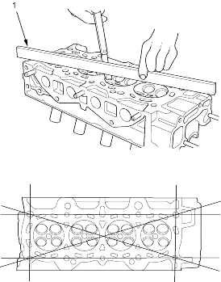
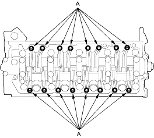
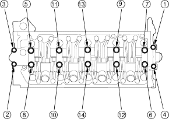

If camshaft-to-holder oil clearances are within specifications, check the cylinder head for warpage.
Measure along the edges and three ways across the centre.
- If warpage is less than 0.05 mm (0.002 in.) cylinder head resurfacing is not required.
- If warpage is between 0.05 mm (0.002 in.) and 0.2 mm (0.008 in.), resurface cylinder head.
- Maximum resurface limit is 0.2 mm (0.008 in.) based on a height of 93 mm (3.7 in.).
Cylinder Head Height:
| Standard (New): | 92.95 - 93.05 mm (3.659 - 3.663 in.) |

- PRECISION STRAIGHT EDGE
- Loosen the adjusting screws (A).

- Remove the bolts and the rocker arm assembly.
- Unscrew the camshaft holder bolts 2 turns at a time, in a criss-cross pattern, to prevent damaging the valves or rocker arm assembly.
- When removing the rocker arm assembly, do not remove the camshaft holder bolts. The bolts will keep the camshaft holders, the springs and the rocker arms on the shafts.
CAMSHAFT HOLDER BOLT LOOSENING SEQUENCE:
